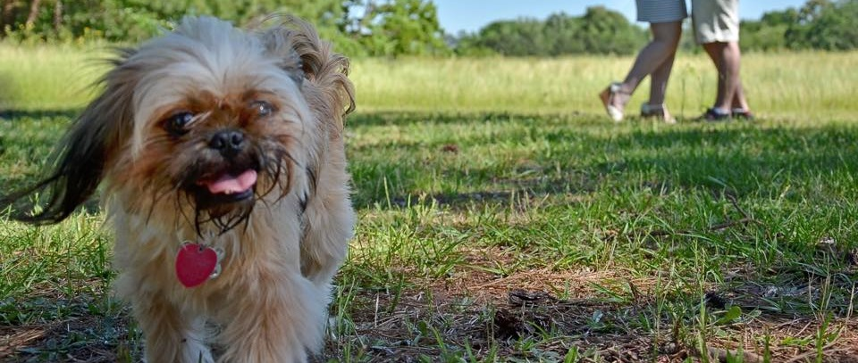

About the Author
C. Ashwinne (above, second from left) is a New England native who now lives somewhere unbearably hot. To avoid the elements, she lurks indoors and writes using an unconventional but effective technique, with one hand on the keyboard, the other occasionally patting her dog (above, leftmost).
When she requires a palate cleanser from writing urban fantasy novels, she particularly enjoys writing superpowered and fantasy fiction. Whether she is writing about a young mage unearthing dirty family secrets, a foul-mouthed teenaged supervillain with a stimulant addiction and her drug-dealing mentor, or a storm-calling sorcerer forced to enlist in the bloodiest war of her era, she loves to use the lens of the extraordinary to examine her characters and explore their relationships in a sharper focus.
Ms. Ashwinne requested that I list her hobbies outside of writing as spending time with her fiancé and her dog, but it would be disingenuous of me to imply that she occasionally does things that aren't writing and yelling or weeping about writing. Rather, she spends time with her fiancé and her dog while writing.
Ms. Ashwinne's various social media websites are linked below, though she hs not yet gotten in the habit of using them. I would like to personally request that you use any of the linked platforms to talk to her about her writing or browbeat her for not drinking enough water, both of which will guarantee a response.